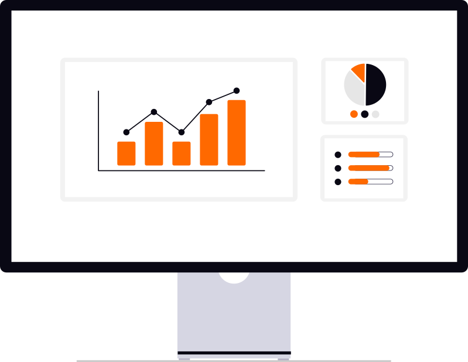

AI projects earning their budget.
Lending, operations, and customer service may have different AI priorities. Vendor proposals don’t say which one you should fund first, what it will depend on, or if a simpler change could solve the problem.

Starting at $15,000
Examine the work before choosing the technology.
We set objectives with leadership, then work with the people who understand the processes in scope. Depending on those functions, the review may examine:
How information moves between your core, loan origination, document, and other operational systems.
Where staff rekey information, search for approved guidance, or spend time resolving exceptions.
Whether the information needed for a proposed use is accessible, reliable, and appropriately permissioned.
What a proposed change would require from operations, IT, information security, and risk or compliance.
What you receive.
Findings from staff input forms, interviews, and observed walkthroughs of the workflows in scope.
A current-state cost baseline and assessment of data readiness.
Prioritized opportunities tied to leadership's objectives, with cost and benefit estimates and their assumptions.
Build, buy, or wait options, including relevant vendors where appropriate. We accept no vendor commissions, referral fees, or resale revenue.
A sequenced roadmap in a plain-language executive report, plus the method to revisit the priorities as circumstances change.
A recommendation your institution can act on.
Leadership can see what deserves investment, what needs preparation, and what should wait. Your team keeps the analysis and roadmap and can use them with its existing providers. Implementation is a separate decision, not a required next purchase.
This engagement assesses AI opportunities and operational readiness. It does not replace your institution's internal audit, legal review, or regulatory examination.
Start with the functions you want to improve.
Bring the operational question or investment decision in front of you. We will discuss the review's boundaries, the staff input needed, and the information required before agreeing the scope.
Discuss your audit scope